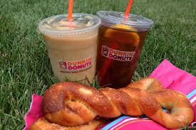
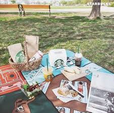

Dunkin Donuts is a favored coffee shop across the US. It even has its slogan, "America runs on Dunkin". Dunkin is known for having really sweet coffee along with a wide variety of donuts to chose from. Dunkin is way cheaper than starbucks. You can get a medium iced coffe for $3.01 while at starbucks it would be $4.45. Dunkin also has more simple food that all ages would enjoy such as bagels and egg and cheese on crassoints, bages, english muffins, and toast. There donuts also make it a fan favorite with so many choices that you and your family will love. Dunkin is also trying to connect more with its younger customers as they have started to reach out to teenage celebrities such as Charli De'amilo to create her own drink called the Charli. If you have a sweet tooth and love coffe, Dunkin is the place for you.
Starbucks is one of the most popular coffee places. From being an essential in many youtube vlogs, to funny skits on tik toks about customers, starbucks has been appreciated by many. If you are a big coffee fan who really likes the actual taste of coffee, this is your store. Most of the drinks at starbucks have more cofee in them than cream or sugar so you really get that strong bitter taste. They also have all day breakfast as well as all day lunch.If you are in a rush, just stop by and pickup a protein box. My personal favorite is tehir crassoints. They have buttered, chocolate, and ham and swiss and they are all really good. Starbucks has a wide variety of cofee such as iced, frappachinos, hot, lattes, cold brew, nitrobrew, refreshers, teas and many more. If you love cofee and savory breakfast and lunch, starbucks is the place for you.
